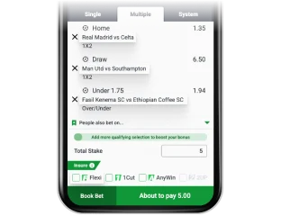
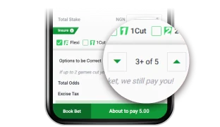
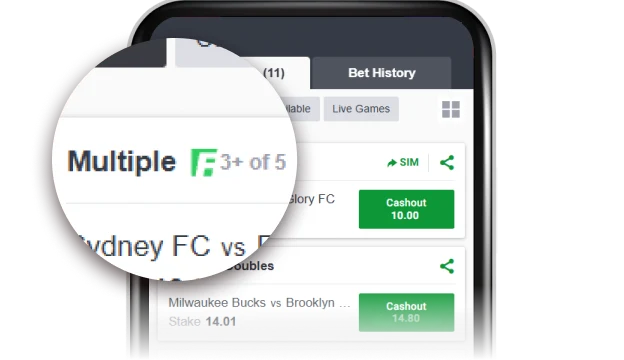

With Flexi, you can customize the winning criteria by selecting the number of correct selections needed to win.
For example, if you choose 3 out of 5, you’ll win if you correctly predict 3, 4, or 5 outcomes.
Step 1: Activate Flexi
Add 3+ selections from different events to your betslip and enable the Flexi option.

Step 2: Set Your Winning Threshold
Choose the number of correct predictions needed to win, e.g., 3 out of 5.

Step 3: Confirm Your Bet
Finalize your bet and enjoy a more flexible and rewarding betting experience.

Terms and Conditions
1. Flexi is only available for Multiple Bets and only if 1 Multiple Bet is in your betslip.
2. Flexi is available for both Pre-Match and Live Betting.
3. Flexi can be Cashed Out.
4. A ticket is won only if a certain amount of the selections are correct out of all selections. For example, a customer chooses 5 or more selections to be correct out of a total of 7 selections and the odds is 15. This means that this customer will only win this ticket if 5 or more selections are correct out of a total of 7 selections. However, odds will be fixed at 15, no matter if the customer wins 5 or more selections out of 7 selections.
5. In cases where there are voided selections, but the required number of winning selections is fullfilled, the full winnings will be credited. In cases where the required number of selection is not fullfilled, but it would have been fulfilled if voided selections were won, the payout will be re-calculated. In very rare cases, the re-calculated payout might be lower than the stake.
6. For certain Multiple Bets, only a certain amount of Flexi is made available. For example, if the amount of total selections is 20, then the minimum selection that you pick is 14.
7. Flexi was created in order to reward our most valued customers. If fraudulent activity or abuse is suspected, we reserve ourselves the right to remove Gifts and associated winnings from a given account or any associated accounts.